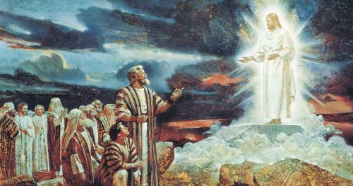

Revelation
What is Revelation?
Revelation is the way by which God reveals knowldege to His children here on Earth. After Adam and Eve partook of the fruit of the tree of knowledge of good and evil, they were banished from the Garden of Eden. Ever since, the human family has been removed from the presence of God, and has needed to rely on revelation to receive guidance from God.
Why Revelation?
Without guidance from God, or revelation, God's children lose their way and stray from the path that He set for them. They begin to follow after the philosophies of men rather than the true doctrines taught by God through His authorized servants. We need revelation to know that we are truly following His ways in this life, to know His will for the world today, and to receive it for critical choices in our own lives.
See Gospel Topic for Revelation